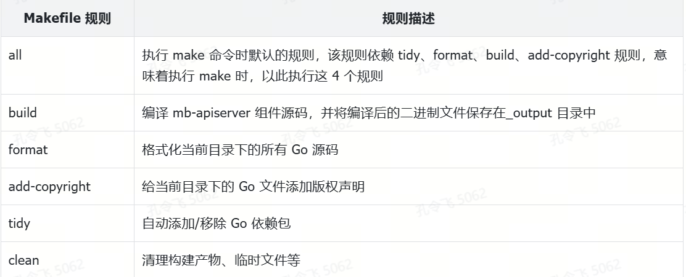

如何初始化一个 Go 项目仓库？
如何初始化一个 Go 项目仓库
Go 项目开发的第一步是初始化一个 Go 项目仓库。根据开发能力、项目类别、项目需求等，可以选择不同的项目初始化方式。
生成工具
初始化 Go 项目最简单的方法是使用工具进行初始化。通过这些脚手架工具，可以快速生成一个 Go 项目模板，并基于生成的项目模板进行开发。目前业界有许多项目生成工具，例如 osctl、kratos、nirvana、sponge 等。使用这些工具初始化 Go 项目的最大优点是方便、快捷，且能够生成相对高质量的项目模板。然而，缺点也很明显：生成的 Go 项目模板的代码质量、目录结构、代码架构、功能列表及功能构建方式均依赖于工具的实现。
本课程介绍的 miniblog 项目也有其匹配的项目生成工具 osctl，osctl 工具可以生成跟 miniblog 项目一致的代码。这些代码从代码质量、目录结构、简洁架构、设计思路及可选的功能列表等都跟 miniblog 保持一致。
复制已有项目
除了使用脚手架工具快速生成 Go 模板项目外，还可以直接复制一个已有的 Go 项目，然后修改项目的仓库名和 Go 包导入路径，替换与原项目名相关的字符串等方式来初始化一个 Go 项目。这种方式的缺点是改造工作量较大。优点是非常灵活，可以根据需求选择喜欢的 Go 项目，魔改之后，形成自己的 Go 项目。
我在开发一个新项目时，最常用的方法是复制已有的 Go 项目，然后修改项目名称和 Go 包导入路径，解决编译问题后形成自己的 Go 项目。我喜欢这种方式的主要原因是其灵活性，可以根据需要选择代码质量高、设计合理、功能列表完整或具备所需功能的 Go 项目。
例如，在开发企业应用时，我会选择复制并魔改 miniblog 项目来初始化一个新的 Go 项目。如果新项目功能复杂，我则会使用 onex 项目来初始化一个新的项目。魔改已有项目为一个新项目时，可以使用 Linux 命令批量修改，修改命令通常如下：
$ cp -a miniblog myproj && cd myproj # 复制 miniblog 项目为新的项目名：myproj
# 替换 Go 包导入路径
$ sed -i 's/github.com\/ketitongxue\/miniblog/github.com\/ketitongxue\/myproj/g' `grep -Rl github.com/ketitongxue/miniblog *`
$ sed -i 's/MiniBlog/MyProj/g' `grep -Rl MiniBlog *` # 替换大写的原项目标识符
$ sed -i 's/miniblog/myproj/g' `grep -Rl miniblog *` # 替换所有的 miniblog 项目标识符
# 查找并将 miniblog 目录改成新的项目名 myproj
$ find . -type d -name 'miniblog' -execdir mv {} myproj \;
$ make build
从零开发
还可以选择从零初始化一个 Go 项目。这种方式最大的缺点是工作量很大，项目目录结构、项目源码、项目代码结构等都需要从零设计并开发。但优点也很明显，可以完全根据自己的需求来设计和开发。
初始化项目仓库
开始 Go 项目开发的第一步便是初始化一个项目仓库。对于 Go 项目而言，主要包括以下初始化内容：
- 创建项目目录；
- 初始化目录为 Go 模块；
- 初始化目录为 Git 仓库；
- 创建需要的目录；
- 创建 Hello World 程序。
创建项目目录
在开始初始化项目之前，需先设计好项目的名称。一个简洁、易懂且合适的项目名是开发高质量 Go 项目的第一步。通常，需要提前确认以下名称：
- **项目名称：**项目名要具有一定语义，说明该项目的功能，建议的格式为纯小写的精短名字。如果项目名字过长，可以按单词用中杠线（-）分割，但最好不要使用。以下是一些合格的名字：api、controllermanager、controller-manager。不建议命名为：controller_manager；
- **项目名称大小写：**还需确认项目名在代码中的大小写格式。统一大小写格式可以使整个代码命名格式保持统一。例如：controller-manager/controllermanager 项目的小写格式为 controllermanager，大写格式为 ControllerManager；
- **项目名简写格式：**有些项目名出于易读性考虑，可能会较长。在编写代码时，如果引用了项目名，可能会导致代码行过长，为了使代码行简短易读，通常会采用简写模式。带中杠线分割的项目名的简短模式一般为每个单词的首字母，例如：controller-manager 为 cm。不带中杠线分割的项目名简写模式需要根据具体名字确定，且没有统一的命名规则，例如：controller 可以简写为 ctrl。
一个好的名字是一个好的开始。本课程实战项目的项目名字为 miniblog，意为微博客。代码中的大写格式为 MiniBlog，小写格式为 miniblog。简写格式为 mb。
确定好项目名字后，接下来可以在指定的组织目录下创建项目目录。我将在 ketitongxue 组织下创建 miniblog 项目目录。ketitongxue 组织是一个专门进行 Go 实战教学的 GitHub 组织，里面包含了大量优秀的 Go 实战项目，例如 OneX、EasyAI 等项目。如果你对这些项目感兴趣，可以访问 ketitongxue/community 来查看这些项目。
通过执行以下命令来创建目录，并在项目目录中添加一个 README.md 文件：
$ mkdir -p $GOPATH/src/github.com/ketitongxue/miniblog
$ cd $GOPATH/src/github.com/ketitongxue/miniblog
$ echo '## miniblog 项目' >> README.md
提示：
你可以使用 https://readme.so 工具来协助生成 README 文件，通常 README 文件需要包含以下部分：Features、Installation、Usage/Examples、Documentation、Feedback、Contributing、Authors、License、Related。
初始化目录为 Go 模块
miniblog 是一个 Go 项目，根据 Go 语法要求，还需要将该项目初始化为一个 Go 模块，并添加到 Go 工作区中。初始化命令如下：
$ go mod init # 初始化当前项目为一个 Go 模块
$ go work init . # 初始化当前目录为一个 Go 工作区
$ go work use . # 添加当前模块到 Go 工作区
初始化目录为 Git 仓库
当前项目开发基本上都是使用 Git 来管理项目源码，因此，还需要将项目仓库初始化为一个 Git 仓库。
在提交代码时，有些文件，例如备份文件、临时文件和日志文件不需要提交到项目仓库中，可以通过在项目目录下添加 .gitignore 文件来忽略这些文件。如果你不知道如何配置 .gitignore 文件中的内容，可以借助 .gitignore 文件生成工具来自动生成一个可用的 .gitignore 文件，例如 gitignore.io 就是一个很好用的 .gitignore 文件生成工具。miniblog 项目使用的 .gitignore 文件如下述代码所示。
$ tee -a $GOPATH/src/github.com/ketitongxue/miniblog/.gitignore <<'EOF'
# 备份文件
*.bak
*~
# Go 工作区文件。Go 项目开发中，不建议将 Go 工作区文件提交到代码仓库
go.work
go.work.sum
# 日志文件
*.log
# 自定义文件
/_output
EOF
可以执行以下命令将 Go 项目仓库初始化为一个 Git 仓库：
$ git init # 初始化当前目录为 Git 仓库
$ git config user.name JuZX # 设置仓库级别用户名
$ git config user.email wo_sakura@163.com # 设置仓库级别邮箱
$ git config --global credential.helper store # 永久保存凭据
$ git add . # 添加所有被 Git 追踪的文件到暂存区
$ git remote add origin git@github.com:ketitongxue/miniblog.git # 将本地仓库与远程仓库相关联
$ git commit -m "feat: 第一次提交" # 将暂存区内容添加到本地仓库中
$ git push -u origin master
之后，可以在 miniblog 目录下进行代码开发，并根据需要提交代码。提交后的源码目录内容如下：
$ ls -AF
.git/ .gitignore go.mod go.work README.md
创建需要的目录
初始化代码仓库后，我们可以根据前面设计的目录规范创建一些空目录，例如：
$ mkdir -p cmd configs docs scripts
$ ls -F
cmd/ configs/ docs/ go.mod go.work README.md scripts/
提前创建一些符合目录规范的空目录，可以带来以下好处：
- 提前规划目录相当于提前规划未来的功能，将未来要实现的功能以目录的形式固化在项目仓库中，起到记录的作用；
- 提前创建目录有利于后续文件按照功能存放在预先规划好的目录中，从而使项目更加规范。否则，不同开发者可能会根据各自的开发习惯，创建各种各样的目录结构和目录名称。
例如，可以将之前设计好的规范存放在 docs/devel/zh-CN/conversions 目录中。因为 Git 不追踪空目录，为了让 Git 追踪空目录，我们可以在空目录下创建一个空文件.keep，并在适当的时候执行以下命令以删除这些临时.keep 文件：
$ find . -name .keep | xargs -i rm {}
创建 Hello World 程序
一个全新的项目，需要先编写一个最简单的 Hello World 程序，以检查开发和编译环境是否就绪。根据目录规范，需要在 cmd/mb-apiserver 目录下创建 main.go 文件，内容如下：
package main
import "fmt"
// Go 程序的默认入口函数。阅读项目代码的入口函数.
func main() {
fmt.Println("Hello World!")
}
执行以下命令编译并运行此 Hello World 程序：
# gofmt 用来格式化当前目录及其子目录中的所有 Go 源文件
$ gofmt -s -w ./
# go build 命令用来编译Go源码
# -o 指定输出的可执行文件名称
# -v 选项用于显示详细的编译过程信息
$ go build -o _output/mb-apiserver -v cmd/mb-apiserver/main.go
# 运行编译生成的可执行文件
$ _output/mb-apiserver
Hello World!
上述命令，成功编译并运行了 mb-apiserver 二进制文件，这说明我们的开发、编译环境已就绪。以下两点需要注意：
- 很多 Go 项目会将 main 文件名与应用程序名字保持一致，例如：miniblog.go。但我在日常开发中，更喜欢将 main 文件命名为 main.go，原因是这样的文件名能够明确告诉其他开发者这是一个 main 文件；
- 我们通常需要将构建产物、临时文件等存放在一个单独的目录中，例如：_output。这样能够方便找到并使用这些构建产物，或安全地删除这些构建产物，例如，只需执行 rm -rf _output 即可删除这些构建产物。此外，我们还可以将 _output 目录加入到 .gitignore 文件中，告诉 Git 不要追踪这些临时文件。
main 文件所在的目录 mb-apiserver 也是 miniblog APIServer 的组件名。在 Go 项目开发中，通常在组件名中包含项目的简写前缀 mb-，通过 mb- 前缀，可以很容易地辨别该组件是 miniblog 的 APIServer 组件。此外，通过 mb- 前缀，也可以有效避免组件名与其他项目的组件名发生冲突。
添加初始文件
- Air 工具配置文件；
- 版权声明文件；
- Makefile 脚本。
热加载 Go 应用
在 Go 项目开发过程中，经常需要修改代码、编译代码、重新启动程序，然后测试程序。若每次都手动操作，则效率较低。此时，可以借助程序热加载工具来自动编译并重启程序。在 Go 生态中，有许多此类工具，其中较为流行的是 Air 工具。你可以直接参考 Air 官方文档了解如何使用 Air 工具。
以下是安装和配置 Air 工具的步骤。
1）安装 Air 工具
安装命令如下：
$ go install github.com/air-verse/air@latest
2）配置 Air 工具。
这里我们使用 Air 官方仓库中给出的示例配置：air_example.toml。air_example.toml 中的示例配置基本能满足绝大部分项目需求，一般只需再配置 cmd、bin、args_bin 三个参数即可。
在 miniblog 项目根目录下创建 .air.toml 文件，文件内容见 miniblog 仓库 feature/s01 分支下的 .air.toml 文件。.air.toml 基于 air_example.toml 文件修改了以下参数配置：
# air在运行时存储临时文件的目录
tmp_dir = "/tmp/air"
[build]
# cmd 指定了监听文件有变化时，air 需要执行的命令。
# 这里指定了执行 make build 重新构建 mb-apiserver 二进制文件
cmd = "go build -o _output/mb-apiserver -v cmd/mb-apiserver/main.go"
# bin 指定了执行完 cmd 命令后，执行的二进制文件。
# 这里指定了执行 _output/ mb-apiserver 文件
bin = "_output/mb-apiserver"
# args_bin 指定了运行二进制文件（bin/full_bin）时添加额外参数，这里设置为空
args_bin = []
3）启动 Air 工具。
配置完成后，在项目根目录下运行 air 命令。
# 默认使用当前目录下的 .air.toml 配置，你可以通过 `-c` 选项指定配置，例如：`air -c .air.toml`
$ air
__ _ ___
/ /\ | | | |_)
/_/--\ |_| |_| \_ v1.62.0, built with Go go1.24.4
mkdir /tmp/air
watching .
watching _output
watching cmd
watching cmd/mb-apiserver
watching configs
watching docs
watching scripts
Proxy server listening on http://localhost:8090
building...
command-line-arguments
running...
Hello World!
Process Exit with Code 0
通过上述 air 命令的输出，可以得知 air 成功编译并运行了 miniblog 项目。之后，修改项目目录下的 Go 文件时，air 工具会自动编译源代码并运行配置的可执行文件。
# 修改 main.go 为
fmt.Println("Hello World! Test Air")
# 修改 main.go 后自动输出以下内容
cmd/mb-apiserver/main.go has changed
building...
command-line-arguments
running...
Hello World! Test Air
添加版权声明
如果项目是一个开源项目或计划在未来开源，则需要为项目添加版权声明，主要包括以下内容：
存放在项目根目录下的 LICENSE 文件，用于声明项目所遵循的开源协议；
项目源文件中的版权头信息，用于说明文件所遵循的开源协议。
业界当前有上百种开源协议可供选择，常用的有六种，按从严格到宽松的顺序依次为：GPL、MPL、LGPL、Apache、BSD、MIT。
miniblog 项目使用了最宽松的 MIT 协议。
miniblog 添加 LICENSE 文件
一般项目的根目录下会存放一个 LICENSE 文件，用于声明开源项目所遵循的协议，因此我们也需要为 miniblog 初始化一个 LICENSE 文件。我们可以使用 license 工具来生成 LICENSE 文件，具体操作命令如下：
$ go install github.com/nishanths/license/v5@latest
$ license -list # 查看支持的代码协议
# 在 miniblog 项目根目录下执行
$ license -n 'JuZX <wo_sakura@163.com>' -o LICENSE mit
上述命令将在当前目录下生成一个名为 LICENSE 的文件，该文件包含 MIT 开源协议声明。
给源文件添加版本声明
除了添加整个项目的开源协议声明，还可以为每个源文件添加版权头信息，以声明文件所遵循的开源协议。miniblog 的版权头信息保存在 scripts/boilerplate.txt 文件中。
提示：
版权头信息保存的文件名，通常命名为 boilerplate。
有了版权头信息，在新建文件时需要将这些信息放在文件头中。如果手动添加，不仅容易出错，还容易遗漏文件。最好的方法是通过自动化手段追加版权头信息。追加方法如下。
（1）安装 addlicense 工具
安装命令如下：
$ go install github.com/marmotedu/addlicense@latest
（2）运行 addlicense 工具添加版权头信息。
授权模板
Copyright 2025 JuZX <wo_sakura@163.com>. All rights reserved.
Use of this source code is governed by a MIT style
license that can be found in the LICENSE file. The original repo for
this file is https://github.com/ketitongxue/miniblog.
运行以下命令添加版权头信息。
$ addlicense -v -f ./scripts/boilerplate.txt --skip-dirs=third_party,_output .
可以看到 main.go 文件已经添加了版权头信息，内容如下：
// Copyright 2025 JuZX <wo_sakura@163.com>. All rights reserved.
// Use of this source code is governed by a MIT style
// license that can be found in the LICENSE file. The original repo for
// this file is https://github.com/onexstack/miniblog.
package main
import "fmt"
// Go 程序的默认入口函数。阅读项目代码的入口函数.
func main() {
fmt.Println("Hello World!")
}
编写 Makefile 脚本
在编译 miniblog 项目时，我们手动执行了以下编译命令来编译源码：
$ go build -o _output/mb-apiserver -v cmd/mb-apiserver/main.go
但是，随着项目的迭代，上述编译命令可能会变得更长，并且在整个项目开发周期中，这一命令将被频繁执行。如果每次都手动执行命令编译源码，不仅效率低下，而且容易出错。如果一个项目有多个开发者协作，每个开发者执行的命令和参数可能不同，这将导致编译结果的不一致，进而增加沟通和维护成本。
那么，该如何解决这些问题呢？最佳实践是使用构建工具来管理项目，并将这些高频操作集成到构建工具中。构建工具（Build Tool）是一种用于自动化从源代码生成可用目标（Targets）的工具，这些目标可以是库、可执行文件或生成的脚本等。
业界当前有许多构建工具，相对受欢迎的有：Make、Bazel 和 CMake。Make 是一个广泛使用的 GNU 构建工具，其优点在于高普及度和简单易学的语法，但在大型项目中构建速度较慢，且不支持增量构建和缓存。Bazel 是由谷歌开发的构建工具，支持多语言和多平台，具有高可伸缩性和局部增量编译的优势，但系统复杂度较高，学习曲线陡峭。CMake 是一个跨平台的构建工具，能够自动发现库和配置工具链，易于书写的 CMakeLists.txt 文件使其使用方便，但相比于 Make 更为复杂，生成的 Makefile 可能较为臃肿。
这三种构建工具各有优缺点。在选择最合适的管理工具时，需要对这三种工具有深入的了解，明晰每种工具的优缺点及其适用场景。以下是我的建议：如果没有特殊需求，建议在 Make 和 CMake 中选择更为普适的 Make。对于一般项目（即绝大多数 Go 项目），可以使用更加通用的 Make 工具。对于超大型项目（例如公司级别的 Git 大仓），则可以考虑使用 Bazel。
miniblog 项目选择 Make 作为构建工具。业界优秀的项目基本都是采用 Make 来管理的，例如：Kubernetes、Docker、Istio 等。
编写简单的 Makefile
要使用 Makefile 管理项目，必须学会编写 Makefile 脚本。由于 Makefile 语法较为复杂，网上也有许多优秀的课程，因此本课程不会详细介绍。建议通过以下方式学习 Makefile 编程。
学习 Makefile 基本语法，可参考 docs/book/makefile.md 文件；
学习 Makefile 高级语法（如果有时间或感兴趣）：陈皓老师编写的《跟我一起写 Makefile（PDF 重制版）》。
miniblog 项目的 Makefile 文件位于项目根目录下，内容如下：
# ==============================================================================
# 定义全局 Makefile 变量方便后面引用
COMMON_SELF_DIR := $(dir $(lastword $(MAKEFILE_LIST)))
# 项目根目录
PROJ_ROOT_DIR := $(abspath $(shell cd $(COMMON_SELF_DIR)/ && pwd -P))
# 构建产物、临时文件存放目录
OUTPUT_DIR := $(PROJ_ROOT_DIR)/_output
# ==============================================================================
# 定义默认目标为 all
.DEFAULT_GOAL := all
# 定义 Makefile all 伪目标，执行 `make` 时，会默认会执行 all 伪目标
.PHONY: all
all: tidy format build add-copyright
# ==============================================================================
# 定义其他需要的伪目标
.PHONY: build
build: tidy # 编译源码，依赖 tidy 目标自动添加/移除依赖包.
@go build -v -o $(OUTPUT_DIR)/mb-apiserver $(PROJ_ROOT_DIR)/cmd/mb-apiserver/main.go
.PHONY: format
format: # 格式化 Go 源码.
@gofmt -s -w ./
.PHONY: add-copyright
add-copyright: # 添加版权头信息.
@addlicense -v -f $(PROJ_ROOT_DIR)/scripts/boilerplate.txt $(PROJ_ROOT_DIR) --skip-dirs=third_party,vendor,$(OUTPUT_DIR)
.PHONY: tidy
tidy: # 自动添加/移除依赖包.
@go mod tidy
.PHONY: clean
clean: # 清理构建产物、临时文件等.
@-rm -vrf $(OUTPUT_DIR)
在编写 Makefile 规则之后，可以执行 make <target> 命令以运行指定的 Makefile 规则。例如，可以执行 make build 命令编译 mb-apiserver 组件。
项目支持了 Makefile 之后，未来所有的编译、单元测试等项目管理操作，都建议通过执行 Makefile 规则来完成。添加了 Makefile 之后，还需要更新 .air.toml 文件，将其中的 cmd 改成cmd = "make build"。
上述 Makefile 文件中的 Makefile 规则如下表所示。

Makefile 规则语法
为了使你更好地理解 Makefile 的内容，本节将介绍 Makefile 中的重点语法。Makefile 的规则语法如下：
target ...: prerequisites ...
command ...
...
target 代表了一个 Makefile 规则，可以是对象文件（object file）、可执行文件或标签（label）。可以使用通配符，当有多个目标时，目标之间用空格分隔。
prerequisites 指定了生成该 target 所需的依赖规则，当有多个依赖规则时，依赖规则之间用空格分隔。
command 指定了该 target 要执行的命令（任意 shell 命令）。在执行 command 之前，默认会先打印出该命令，然后输出命令的结果。如果不想打印出命令，可以在各个 command 前加上 @。command 可以是多条，可以分行书写，但每行都须以 TAB 键开始。此外，如果后一条命令依赖于前一条命令，则这两条命令需要写在同一行，并用分号进行分隔。如果要忽略命令的错误，需要在每个 command 之前加上减号-。
只要 targets 不存在或 prerequisites 中有一个以上的文件比 target 文件新，command 所定义的命令就会被执行。command 将产生所需的文件或执行预期的操作。
Makefile 核心内容解读
为了让你更好地理解 Makefile，本节将详细介绍上述 Makefile 所实现的核心功能。
- 获取项目根目录的绝对路径。
以下几行 Makefile 代码最终获取了项目根目录的绝对路径：
COMMON_SELF_DIR := $(dir $(lastword $(MAKEFILE_LIST)))
# 项目根目录
PROJ_ROOT_DIR := $(abspath $(shell cd $(COMMON_SELF_DIR)/ && pwd -P))
# 构建产物、临时文件存放目录
OUTPUT_DIR := $(PROJ_ROOT_DIR)/_output
MAKEFILE_LIST 变量是 Makefile 的内置变量，包含了所有被 make 读取的 Makefile 的文件名列表。当前 makefile 的文件名总是位于列表的最后，文件名之间以空格进行分隔。函数 $(lastword <text>) 会返回符串 <text> 中的最后一个单词。函数 $(dir <names...>) 从文件名序列 <names> 中取出目录部分。目录部分是指最后一个反斜杠（/）之前的部分。如果没有反斜杠，那么返回 ./。所以，最终 COMMON_SELF_DIR 变量保存了当前 Makefile 所在目录的路径。
函数 $(shell <操作系统命令>) 执行操作系统命令，并返回操作结果。函数 $(abspath <text>) 将 <text> 中的路径转换成绝对路径，并将转换后的结果返回。所以，最终 PROJ_ROOT_DIR 保存了项目根目录的绝对路径。OUTPUT_DIR 变量定义构建输出文件和临时文件的存放目录。
- 设置 Makefile 默认规则。
通过 .DEFAULT_GOAL:=all 设置了执行 make 命令时的默认规则。例如：
# 定义默认目标为 all
.DEFAULT_GOAL := all
# 定义 Makefile all 伪目标，可以用于手动调用
.PHONY: all
all: tidy format build add-copyright
如果没有指定 .DEFAULT_GOAL，则会默认执行 Makefile 文件中的第一条规则。
上述 all 伪目标指定了当执行 make（不带参数）命令时默认执行的目标，按执行顺序依次为：tidy（自动添加/移除依赖包）、format（格式化 Go 源码）、build（编译源码）、add-copyright（添加版权头信息）。
- 运行指定规则
有以下规则：
.PHONY: build
build: tidy # 编译源码，依赖 tidy 目标自动添加/移除依赖包.
@go build -v -o $(OUTPUT_DIR)/mb-apiserver $(PROJ_ROOT_DIR)/cmd/mb-apiserver/main.go
上述 Makefile 规则中，build 是 Makefile 规则，通过 .PHONY 将其设置为伪目标。.PHONY 是一个特殊的伪目标，其主要作用是告诉 make 编译器，.PHONY 指定的目标不是文件名，而是命令或动作，make 总是会执行相关命令，忽略同名文件的存在。因此，当执行 make build 命令时，会执行 build 规则。
build 规则依赖于 tidy 规则。在执行 build 之前，make 会检查 tidy 是否需要执行。如果 tidy 目标发生变化或者从未被执行过，make 会先执行 tidy。在执行完 tidy 规则之后，便会执行 build 规则中指定的命令：
go build -v -o $(OUTPUT_DIR)/mb-apiserver $(PROJ_ROOT_DIR)/cmd/mb-apiserver/main.go
- 实现幂等删除。
建议在清理临时目录时使用 @-rm -vrf $(OUTPUT_DIR) 语法，- 语法可以确保在临时目录不存在时，Makefile 执行结果仍然成功，实现幂等清理的效果。
- 使用绝对路径。
建议在编写 Makefile 脚本时，通过 $(PROJ_ROOT_DIR) 变量引用文件的绝对路径，例如：
.PHONY: clean
clean: # 清理构建产物、临时文件等.
@-rm -vrf $(OUTPUT_DIR)
这里的 $(OUTPUT_DIR) 是绝对路径。通过引用绝对路径，可以确保路径符合预期，避免使用相对路径带来的潜在问题。